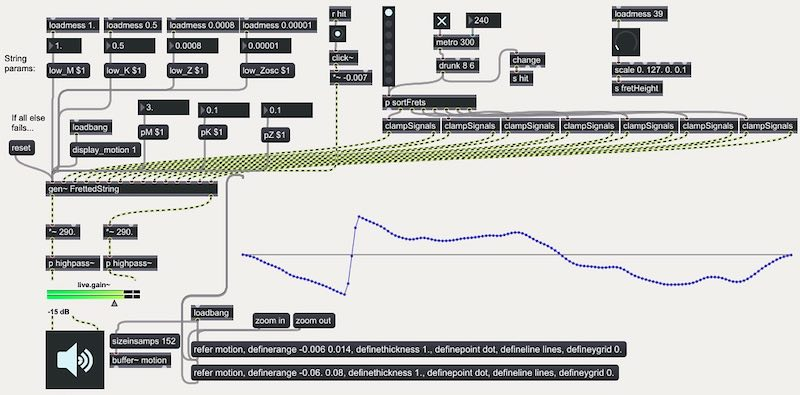

Physical modelling techniques are now an essential part of digital sound synthesis, allowing for the creation of complex timbres through the simulation of virtual matter and expressive interaction with virtual vibrating bodies. However, placing these tools in the hands of the composer or musician has historically posed challenges in terms of a) the computational expense of most real-time physically based synthesis methods, b) the difficulty of implementing these methods into modular tools that allow for the intuitive design of virtual instruments, without expert physics and/or computing knowledge, and c) the generally limited access to such tools within popular software environments for musical creation. To this end, a set of open-source tools for designing and computing mass-interaction networks for physically-based sound synthesis is presented. The audio synthesis is performed within Max/MSP using the gen~ environment, allowing for simple model design, efficient calculation of systems containing single-sample feedback loops, as well as extensive real-time control of physical parameters and model attributes. Through a series of benchmark examples, we exemplify various virtual instruments and interaction designs.
Introduction
Over the last few decades, physically-based sound synthesis methods have evolved from computationally expensive & mostly non real-time techniques to one of the most active fields in Computer Music, now widely employed in digital sound synthesis, including in various commercialised solutions. Alongside historic methods, such as digital waveguides [1], modal synthesis [2] or lumped mass-interaction modelling [3], recent trends show an increasing number of methods rooted in mechanical and acoustical simulation, such as finite-difference-time-domain systems (FDTD) [5] or finite-element modelling [6]. Moreover, scattering techniques can be used to connect wave-based methods to Kirchhoff-based methods [6], enabling hybrid modelling strategies and thus benefiting from the strengths of each individual paradigm.
Tools for physical modelling sound-synthesis
Advances in physical modelling and simulation techniques have, in most cases, been accompanied by the development of frameworks and tools allowing the afferent concepts to be manipulated. However, approaches differ significantly depending on the end goal:
A number of tools, such as the Synthesis Toolkit [7] or Block Compiler [6] allow for expert users to design complex numerical simulations of musical instruments. They generally require a solid background in both computing and physics, and as such are targeted for the researcher or engineer rather than the musician or composer.
Other tools hide some of the inner complexity of discrete-time physical models, offering more approachable concepts so that a composer or musician may be able to assimilate and incorporate them into a creative process, with little prior scientific knowledge. GENESIS [8] and MODALYS [2] are examples of such systems.
Modularity considerations
Another distinction between tools for creation by means of physical modelling is the degree of modularity that is made available to the user:
Non-modular systems such as model-based digital pianos1[9], the Brass project [10] or Physical Audio’s reverb plate2 present the user with a fixed physical model to play, possibly allowing him/her to manipulate physical parameters or chose between several modes of excitation, etc.
Semi-modular systems generally propose a base of common physical structures (strings, plates, etc.) available as primitives that can be assembled together to create virtual objects [2, 11, 12].
Entirely-modular systems such as GENESIS [8] allow the user to design virtual structures “from the ground up” by assembling basic physical elements (masses, springs, non-linear interactions).
We note that as methods such as finite-difference time-domain schemes evolve, offering evermore realistic synthesised sound, the inherent complexity of such models renders intuitive modification of the instruments difficult for non-expert users; higher-level tools are generally limited to a semi-modular approach [13] by connecting plates, strings or bars through locally handled lumped interactions.
Systems aiming for a more fundamental, constructivist, type of modularity must strike a compromise by leaning on physical formulations that can be split into fundamental “atomic” elements: such is the case of mass-interaction physical modelling.
Modular physical modelling for artistic creation
(Unsupervised!) modelling
The study of mass-interaction modelling for musical creation is largely documented, essentially through work conducted since the early 80’s at ACROE [3, 8]. One of the key features of this approach - and an essential distinction from most other physical modelling methods - is that virtual physical objects can be designed intuitively (or empirically) by assembling basic physical elements into a network.
In this case, “modelling” does not necessarily refer to creating a virtual simulation that presents similar behaviour to that of an existing physical instrument (see [14]); rather, modelling is the activity of exploring virtual mechanical constructions in order to discover behaviours and sounds that are judged interesting (regardless of any criteria of realism). Emphasis is consequently placed on providing various tools for the construction, generation and analysis of virtual physical networks in order to assist the composer or musician during the design process [15, 16].
Towards open tools for mass-interaction modelling
Recent years show a regain of interest for modular and more accessible physically-based synthesis methods such as mass-interaction modelling, stimulated partly by the possibilities of force-feedback interaction with such models [17, 18].
Efforts have been made to provide accessible open-source tools for environments such as Max/MSP. The HSP project [19] presents masses and interactions directly as Max objects, that can be interconnected to form a network. However, the single sample delay needed for the position/force feedback loop imposes that Max runs with a VectorSize of 1, hindering the performance of general audio workflow in order to preserve the integrity and stability of the discrete physical computation.
Synth-A-Modeler [20] is based on the Faust compiler3 and allows creating and compiling mass-interaction models (and also hybrid models with waveguide and modal synthesis) for a variety of targets (PureData, Max, standalone, etc.). Compiled models are then available as black-box objects that can be acted upon and observed through inlets and outlets.
Presented work: mi-gen
By leveraging the properties of the gen system, the work presented in this paper allows for efficient implementation of mass-interaction models within Max/MSP. These models can be generated using a dedicated scripting tool, or coded directly within gen’s codebox object, leaving the user free to modify them at any time. Large scale models can be designed (with guaranteed single-sample loopback), visualised, interacted with, and integrated into complex workflows within Max.
First, we provide a brief introduction to algorithmic and computational aspects of mass-interaction physical modelling. Then, we present how such models can be coded and computed with the mi-gen toolbox. Examples and system performance are then discussed, with perspectives for future work.
Mass-Interaction Physical Modelling Basics
As the name suggests, mass-interaction models are composed on the one side of mass-type elements, and on the other interaction-type elements. The modularity of the formalism stems from the fact that the basic equations for each are discretised individually, and can then be assembled freely by following a small number of connection rules [3, 22, 23]. The principles of mass-interaction modelling can operate on position and force data of any spatial dimension (scalar values, 2D or 3D vectors, etc.). The equations below and the implementation in this paper are 1D, meaning that all masses move along a single axis.
A discrete-time implementation of a punctual mass is obtained by applying the second order central difference scheme to Newton’s second law (\( f \) is the force applied to the mass, \( m \) is its inertia, \( a \) its acceleration, and \( x \) its position):
$$\label{eq:massNewton}
f = ma = m \frac{d^2 x}{dt^2}$$
Resulting in the following normalised form (with discrete-time positions and forces noted \( X \) and \( F \)):
$$\label{eq:discretetimemass}
X_{(n+1)} = 2 X_{(n)}- X_{(n-1)} + \frac{F_{(n)}}{M}$$
With \( M \), the discrete time inertial parameter defined as \( M = m/ΔT^2 \) (where \( ΔT \) is the sampling interval).
As an example of a simple interaction element, the visco-elastic force applied by a linear spring (with stiffness coefficient \( k \), damping coefficient \( z \) and resting length of \( l_{0}=0 \)) connecting a mass \( m_{2} \) at the position \( x_{2} \) to a mass \( m_{1} \) at the position \( x_{1} \) is given by:
$$\label{eq:HookeSpring}
f_{{1\rightarrow2}} = -k (x_2 - x_1) - z \frac{d (x_2 - x_1)}{dt}$$
Approximating the velocity by applying the backward Euler difference scheme, we obtain:
\begin{align}
F_{(n)} =& -K (X_{2(n)} - X_{1(n)}) \nonumber \\
& -Z((X_{2(n)} - X_{2(n-1)}) \\
& - (X_{1(n)} - X_{1(n-1)})) \nonumber
\end{align}
With the discrete-time stiffness parameter \( K = k \), and the discrete-time damping parameter \( Z = z/ΔT \). The resulting force is applied symmetrically to each mass (Newton’s third law):
\begin{align}
F_{1(n)} -= F_{(n)} \nonumber \\
F_{2(n)} += F_{(n)}
\end{align}
Each interaction acting upon a mass effectively sums its calculated force into a buffer, which equates (after weighting by \( M \) ) to the total acceleration applied to the mass during this time-step. The computation of a mass-interaction network consists in a closed-loop computation of the masses and of the interactions. By convention, we will say that the vibration of 1D topological structures occurs along the z axis.
The mi-gen library
The mi-gen toolbox is an open-source Max package, available on GitHub4. It is composed of several documentation and example patches, as well as a library of functions for gen’s codebox object. Codebox is a textual coding environment within gen (based on a syntax similar to C), giving access to all gen specific functions such as History, Delay, Buffer/Data access, etc.
As in all gen patches, feedback paths with a single sample of delay are possible regardless of Max’s VectorSize, which is crucial for implementing the closed loop calculations of equations ([eq:discretetimemass]) and ([eq:springDampAll]) for all of the masses and interactions in the physical model. Figure 1 shows a Max patch centred around a “fretted string” gen physical model.

Figure 1. Screenshot of a Max patch implementing a string model. Control parameters are sent as messages to the gen~ patch, and external position and force inputs are provided as audio-rate signals.
Code structure
The sequence in Figure 2 shows the code structure of a simple model: a harmonic oscillator (a mass, connected to a fixed point by a dampened spring) that can be subjected a force input via the first inlet of the codebox object, and can be struck using a contact interaction (with stiffness, damping and threshold distance parameters) by another mass whose position is controlled by the second inlet.
// Model data structures
Data m_in2(3);
Data gnd(3);
Data m1(3);
// Control Rate Parameters
Param Z(0.0001);
Param K(0.01);
Param M(1.);
History model_init(0);
// Model init phase
if(model_init == 0){
init_mat(m_in2, 1, 1);
init_mat(gnd, 0, 0);
init_mat(m1, 0, 0);
model_init = 1;
}
// Model computation
update_input_pos(m_in2, in2);
compute_ground(gnd);
compute_mass(m1, M);
compute_contact(m1, m_in2, 0.1, 0, 0);
apply_input_force(m1, in1);
compute_spring_damper(m1, gnd, K, Z);
out1 = get_pos(m1);
Figure 2. A simple mass-interaction model expressed in genexpr code, using the mi-gen~ library.
Physical variables and initial states
Material points of the model (including “avatars” for external position inputs) are stored as Data objects (equivalent to an array of floating point 64-bit values). Each one is composed of three values, corresponding respectively to the point’s current position, previous position, and accumulated force buffer. These attributes are set to initial conditions during an initialisation phase. By convention, modules are set with an initial position and velocity (inferred by the previous position), and with null acceleration.
Interactions have no physical variables other than their own parameters, since an interaction acts directly (and symmetrically) on the Data structures of the two masses that it connects.
Computational loop
The simulation of the model’s dynamics is performed by computing all of the mass-type algorithms then all of the interaction type algorithms, for each time step (each audio sample in our case). All of the physical algorithms are implemented inside the migen-lib.genexpr file.
External position inputs are applied to the “avatar” modules during the mass-phase, and external force inputs are applied to corresponding masses during the interaction-phase. Position and/or force values from “observed” masses are collected at the end of the cycle and routed to outputs.
Parameters of the physical algorithms
The physical parameters expressed inside mi-gen are normalised discrete-time parameters as previously defined. On the one hand, this renders the behaviour of models dependent on the sample rate for a given set of parameters, on the other it provides a direct view of stability conditions, defined at each mass as \(4M > K + 2Z\) (with \(M\) the inertia of the mass, and \(K\) and \(Z\) the summed stiffness and damping applied to this mass by interactions - see Appendix bellow). Translations to and from standard unit parameters can easily be established allowing the user to manipulate either one.
Parameters may be:
hard-coded values that are immutable once the patch is compiled,
control-rate parameters that can be dynamically modified by sending messages to the gen object,
audio-rate parameters, added as signal inputs to the codebox patch.
The latter is preferable for fast-varying parameters [24], for instance in cases such as dynamically re-tuning the pitch of a model according to input MIDI notes.
The MIMS scripting system
Although creating physical models directly in codebox is fairly intuitive, designing larger scale objects is much easier using higher level tools to describe the topology. MIMS5 (Mass-Interaction Model Scripter) is a basic editor written in Python for this purpose, providing compilation into dsp code for either gen or FAUST [21].
Models are described in a format similar to PNSL [21]: each physical element is given a unique identifier, or label (e.g. @mass1), that can be referenced by other elements (e.g. when connecting an interaction between two masses). For instance:
@spr springDamper @m1 @m2 0.1 0.001
creates a dampened spring connecting masses m1 and m2 with a discrete-time stiffness of 0.1 and discrete-time damping of 0.001. The inputs and outputs of the gen patch are also based on labels:
@in1 frcInput @m1
@out2 posOutput @m2
routes a force signal from the inlet in1 to the mass m2 and routes an observation of m2’s position to the outlet out2.
Parameters also function as labels and can be used in place of hard-coded values in the definition of any module’s parameters as follows:
@M param 1
@K param 0.01
@Z param 0.001
...
@cel osc M K Z 0. 0.1
The above code creates labelled inertia, stiffness and damping control-rate parameters and then creates an integrated harmonic oscillator with these parameters, set at initial position \(z=0\) with an initial velocity of \(0.1\) metres-per-sample. Audio-rate parameter inputs are automatically placed after any explicitly defined inputs for the patcher.
MIMS also provides rudimentary functions for automated generation of larger scale topological structures, such as strings, rectangular, triangular and hexagonal membranes.
Real-time visualisation
Visualising deformations using Motion Buffers
Figure 3. Vibratory deformations of a mesh attached at each corner. Underlying physical model: 20x20 masses. NURBS-based rendering in Jitter.
So far, we have only been able to observe points of a physical model that we route to outlets at the audio rate. However, understanding the behaviour of a mass-interaction model is greatly facilitated by visualising the deformations of the entire object, even if we only “listen” to it in a few points. This is achieved by creating motion buffers. Motion buffers are simple MSP buffer objects, used a little unconventionally: instead of storing a temporal waveform, the buffer stores an instantaneous snapshot of the positions of a set of masses. MIMS provides two uses for motion buffers:
A 1-channel generic buffer, containing the motion of all the mass-type elements in the model along the z axis (in order of creation).
Specific 3-channel buffers, containing the motion of a set of mass-type elements in the model along the z axis, as well as fixed x and y coordinates. Masses are added to buffers by adding the buffer name and extra x, y coordinates after the standard module parameters.
The former allows quick visualisation of the model state by drawing the motion buffer with the plot object. The latter is useful for creating visual arrangements that correspond to the topological nature of a mass-interaction network, e.g. grid-based distributions along x and y according to generated mesh patterns, which allows to represent modal deformations and wave propagation along the matter.
Inside the gen patch, the motion buffers are refreshed with new positions once every 200 audio steps (a rate of 220.5 Hz for a sampling rate of 44.1kHz). This limits the computational costs of writing the data, as it is only used for visualisation purposes.
Rendering techniques
Within Max, Jitter offers powerful tools for visual rendering, including surface rendering algorithms such as Non-Uniform, Rational, B splines (NURBS). This technique is used to render smooth curves and surfaces from a limited number of control points (in our case, the x, y, z positions of the masses of a physical model). Using specific motion buffers as discussed above, simple model topologies such as strings and rectangular membranes can be rendered as shown in Figure 3.
Benchmarking & experimentation
The mi-gen toolbox provides a set of tutorial and example patches6, showing a hands-on approach to designing models and control/interaction strategies within Max/MSP.
Performance benchmark
Table 1 shows the results of a selection of models (mostly examples from the toolbox), in terms of complexity, compile-time of the gen patcher, and CPU usage within Max.
| Model Name | N. Masses | N. Int. | Comp. Time | CPU Load |
|---|---|---|---|---|
1000 Mass String |
1000 | 1002 | ∞ | - |
Mesh (25x20) |
506 | 965 | 3 min | 67% |
Mesh (15x15) |
225 | 435 | 22 sec | 15% |
Fretted String |
155 | 203 | 7.7 sec | 8% |
Bowed String |
152 | 159 | 5.8 sec | 7% |
Plucked Harmonics |
152 | 158 | 5.4 sec | 6% |
Drunk Triangles* |
4 | 5 | 1 sec | ~16% |
Table 1. Benchmarking: Number of masses and interactions, compilation time, and Max/MSP CPU load. Measurements were made on a Dell Precision 5530 running Windows 10 & Max 7.3.5. Specs: Intel i7-8850H 4 cores at 2.6GHz, 16GB RAM, 44.1kHz sampling rate, buffer size & vector size of 256 samples. * Drunk Triangles is a small model instantiated dynamically with up to 100 voices, using poly~.
Results show that the main limitation for large scale models stems from the gen compilation phase: models with approx. 650 modules take over 20 seconds to compile, but only occupy around 15 % of the CPU when running. The load displayed by the Max/MSP monitor is reasonable for all models that pass the compilation phase, and shows no noticeable difference whether the visualisation of motion data is active or not.
Beyond a certain volume of codebox code, the compilation of the patch hangs (cf. the 1000 Mass String in Table [bench]). Reasons for this limitation will be investigated. It is worth noting that the authors experienced similar issues with the Faust compiler [21].
Performance of complex models can be optimised by means of dynamically allocated voices using the poly system, as is the case in the Drunk Triangles example, which contains up to 100 instances of a simple mass dropping and bouncing on a “triangle” resonator (shown in Figure 4). Each instance is tuned according to a pseudo random sequence generated with Max’s drunk object, and frees its voice when it detects that the mass has stopped bouncing. Figure 5 shows a visual representation of the entire instrument.
Figure 4. Schematic representation of the Drunk Triangles
Figure 5. Visual representation of the Drunk Triangles polyphonic instrument: bouncing masses in red, resonating structures in blue.
The fretted string model
Plucked or struck string instruments have long been a topic of interest in physical modelling, from the acoustical properties of the string itself [25] to the non-linear collisions [26, 27] that occur in fretted instruments. Below we present a simple mass-interaction implementation of such a model.
Fretting mechanisms in 1D space
Previous work by the authors [28] presented fretted string mass-interaction models with an analogy to the guitar fretboard, where certain string masses are pinned down against fixed points, set underneath them. However, this poses problems since, unlike in real life where fretting gestures are orthogonal to strumming ones, in the 1D virtual model the string is excited in the same axis as the fretting gesture. This forces frets to be placed very low and distributed unevenly beneath the string in order to avoid fret buzz.
A more functional analogy in our case comes from the tuning forks found on concert harps. When rotated by operating the instrument’s pedals, they apply pressure in both directions simultaneously, pinning the string without causing excess displacement. Within Max, it is straightforward to setup two opposite position signals that operate the tuning fork “clamp”, and to replicate the mechanism in as many points as desired.
Model description and behaviour
The vibrating model is a simple string attached between two fixed points. An external force input triggers a mass that moves downwards and collides with the string. Multiple external position inputs control seven frets (or clamps), positioned at intervals corresponding to the diatonic scale. The height of the frets and the speed of the clamping mechanisms can be modified in real-time: we can choose to completely avoid any fret-buzz, or dial in just enough for things to sound lively and interesting... or even go crazy with extremely rattly down-tuned strings! The Max patch is shown in Figure 1.
Figure 6. Schematic representation of the fretted string model (clamping mechanisms on the left side).
“Physical Interaction” Realism
Once again, we stress that the created model does not strive for any true acoustical realism: indeed, the string’s masses are limited to transverse motion, it is modelled with linear springs, has no vibrating body, the discrete number of masses imposes slightly off-key fret positions... the list goes on. However, even in this extremely reductive model, careful physical interaction design brings forth perceptually important emergent non-linear behaviour, inferring character and unpredictability to the instrument.
We could say that the mass-interaction paradigm yields physical interaction realism, in the sense that it faithfully represents anything that can be represented with Newtonian point-based mechanics, and that any path the user chooses to follow from there on - be it searching to reproduce real-life phenomena or exploring the unknown - is entirely up to him.
DISCUSSION
This paper has presented mi-gen, a new library and set of tools for mass-interaction physical modelling sound synthesis in Max/MSP. In comparison to existing tools, it offers efficient computation entirely within Max, without precompiling the models into static black boxes. This allows for on-the-fly iterative model design, direct access to physical parameters and to the model state (which can be visualised using any method seen fit) and - maybe most importantly - it empowers the user by providing a hands-on programming framework for 1D mass-interaction physics, with vast possibilities for customisation. As such, it constitutes a new experimentation ground for combining mass-interaction physics with the immense panoply of signal-based tools available inside of Max, for any sound synthesis, transformation or analysis purpose.
An immediate perspective of this work is integration with affordable force feedback systems (such as the FireFader or the Haply7 device). A more fundamental perspective for musical creation is considering sound synthesis with 3D mass-interaction models, as modelling virtual objects with spatial attributes naturally addresses many of the limitations of 1D modelling, in particular regarding non-linear dynamics.
It is our hope that this work will constitute another step towards opening mass-interaction modelling to a larger spectrum of users, in the Computer Music community and beyond. Despite the apparent simplicity of the formalism, we are convinced that much has still to be said, discovered, and experimented.
Appendix: Stability Conditions For The Harmonic Oscillator
Following equations ([eq:discretetimemass]) and ([eq:springDampAll]), the discrete time recurrence of the linear harmonic oscillator composed of a mass, dampened spring and a fixed point can be expressed (in the absence of external forces other than the spring) as:
$$ X_{(n+1)} + \Big(\frac{K\!+\!Z}{M}\!-\!2\Big).X_{(n)}\!+\!\Big(1\!-\!\frac{Z}{M}\Big).X_{(n-1)} = 0 $$
The associated characteristic polynomial is:
$$ r^2 + A.r\!+\!B = 0 $$
with \( A = (\frac{K\!+\!Z}{M}\!-\!2) \) and \(B = (1\!-\!\frac{Z}{M})\), giving the discriminant \( Δ=A^2-4B \).
Case 1: Oscillating conditions (Δ < 0)
If \( Δ < 0 \) equation ([eq:charac]) possesses complex roots and gives an oscillating solution. We can therefore express the physical parameters that bound oscillating solutions as:
$$\
\Big(\frac{K\!+\!Z}{M}\!-\!2\Big)^2 - 4\Big(1\!-\!\frac{Z}{M}\Big) < 0$$
Which can be developed into:
$$(K + Z)^2 < 4KM$$
The pseudo-periodic resulting oscillator is of the form:
$$\
\begin{align}
X_{(n)} & = \chi\rho^n cos(n\omega_p + \varphi) \\
% with \\
% \rho & = \sqrt{B} \\
% \omega_p & = \arccos\Big(-\frac{A}{2\sqrt{B}}\Big)
\end{align}$$
With \( rho = \sqrt{B} \) and \( omega_p = \arccos(-\frac{A}{2\sqrt{B}}) \). Oscillations converge towards 0 for \( 0<\frac{Z}{M}<1 \) and are divergent otherwise.
Case 2: Non-oscillating conditions (Δ ≥ 0)
\( Δ = 0 \) leads to a single real root and a solution of the form:
$$\label{eq:nonOscForm}
\begin{align}
X_{(n)} & = (\alpha + \beta n) \Big(-\frac{A}{2}\Big)^n \\
& = (\alpha + \beta n) \Big(1 - \frac{K\!+\!Z}{2M}\Big)^n \nonumber
\end{align}$$
This condition equates to critical damping in the oscillator:
$$
Z = 2 \sqrt{KM} - K$$
This solution converges if \( |1-\sqrt{\frac{K}{M}}| < 1 \) , resulting in the following stability limits:
$$
0 < \sqrt{\frac{K}{M}} < 2$$
If \( Δ > 0 \), equation ([eq:charac]) has two real roots r1 and r2 and the solution is of the form:
$$ X_{(n)}=\alpha(r_{1})_{n}+\beta(r_{2})_{n} $$
with roots:
$$
r_{1,2} = \frac{-A \pm \sqrt{\Delta}}{2}$$
\( X_{(n)} \) converges towards zero if \( ∣r_{1}∣< 1 \) and \( ∣r_{2}∣< 1 \). Taking \( |\frac{-A + \sqrt{\Delta}}{2}| < 1 \) we can express two inequalities:
$$\label{eq:rootRes}
\begin{align}
\sqrt{\Delta} & < 2-A \\
\sqrt{\Delta} & < 2+A \nonumber
\end{align}$$
Which after developing \( Δ \) and squaring the inequalities (assuming \( 0 < K + Z < 4M \) so that both sides are positive) results in:
$$
\begin{align}
A-B & < 1 \\
A+B & > -1 \nonumber
\end{align}$$
Leading to the final stability conditions as functions of \( M \), \( K \) and \( Z \):
$$
\begin{align}
\frac{K}{M} & > 0 \\
K + 2Z & < 4M \nonumber
\end{align}$$
Final stability conditions
The stability conditions and regimes for our mass-interaction harmonic oscillator are given in Figure 7. The oscillator is numerically stable if the stiffness, damping and mass parameters verify:
$$K+2Z < 4M \nonumber$$
$$K/M > 0 \nonumber$$
Additionally the system will be in an oscillatory regime if the same parameters verify:
$$(K+Z)^2 < 4KM \nonumber$$
$$0 < Z/M < 1 \nonumber$$
Figure 7. Stability conditions for the harmonic oscillator.
Generally speaking, the static regime stability condition for a mass connected to any number of linear springs and/or dampers can be expressed by analysing the harmonic oscillator with \( K_{eq} = ∑K \) and \( Z_{eq} = ∑Z \).
Recent work on the formalisation of mass-interaction networks in FAUST was also conducted by the authors [21].↩
Video demonstrations are provided at: mi-creative.eu/tool_migen.html↩
Bibliography
[1] J. O. Smith, “Physical modeling using digital waveguides,” Computer Music Journal, vol. 16, no. 4, pp. 74–91, Winter 1992.
[2] J.-M. Adrien, “The missing link: Modal synthesis,” in Representations of musical signals. MIT Press, 1991, pp. 269–298.
[3] C. Cadoz, A. Luciani, and J. L. Florens, “Cordis-anima: a modeling and simulation system for sound and image synthesis: the general formalism,” Computer music journal, vol. 17, no. 1, pp. 19–29, 1993.
[4] S. Bilbao, Numerical Sound Synthesis: Finite Difference Schemes and Simulation in Musical Acoustics. Chichester, UK: John Wiley and Sons, 2009.
[5] R. Panneton and N. Atalla, “An efficient finite element scheme for solving the three-dimensional poroelasticity problem in acoustics,” The Journal of the Acoustical Society of America, vol. 101, no. 6, pp. 3287–3298, 1997.
[6] R. Rabenstein, S. Petrausch, A. Sarti, G. De Sanctis, C. Erkut, and M. Karjalainen, “Blocked-based physical modeling for digital sound synthesis,” IEEE Signal Processing Magazine, vol. 24, no. 2, pp. 42–54, 2007.
[7] P. Cook and G. Scavone, “The Synthesis Toolkit (stk),” in Proceedings of the International Computer Music Conference (ICMC-99), Beijing, China, 1999.
[8] N. Castagne and C. Cadoz, “Genesis: a friendly musician-oriented environment for mass-interaction physical modeling,” in ICMC 2002-International Computer Music Conference. MPublishing, 2002, pp. 330– 337.
[9] B. Bank and J. Chabassier, “Model-based digital pianos: from physics to sound synthesis,” IEEE Signal Processing Magazine, 2018.
[10] C. Vergez and P. Tisserand, “The brass project, from physical models to virtual musical instruments: Playability issues,” in International Symposium on Computer Music Modeling and Retrieval. Springer, 2005, pp. 24–33.
[11] S. Bilbao, “A modular percussion synthesis environment,” in Proc. of the 12th Int. Conference on Digital Audio Effects (DAFx-09), 2009.
[12] S. Bilbao, A. Torin, P. Graham, J. Perry, and G. Delap, “Modular physical modeling synthesis environments on gpu”, in ICMC, 2014.
[13] C. J. Webb and S. Bilbao, “On the limits of real-time physical modelling synthesis with a modular environment,” in Proceedings of the International Conference on Digital Audio Effects, 2015, p. 65.
[14] V. Välimäki and T. Takala,“Virtualmusicalinstruments. natural sound using physical models,” Organised Sound, vol. 1, no. 2, pp. 75–86, 1996.
[15] J. Villeneuve, C. Cadoz, and N. Castagne ́, “Visual representation in genesis as a tool for physical modeling, sound synthesis and musical composition,” in New Interfaces for Musical Expression 2015, 2015, pp. 195–200.
[16] J. Villeneuve and C. Cadoz, “Understanding and tuning mass-interaction networks through their modal representation,” in 40th International Computer Music Conference/11th Sound and Music Computing Conference, 2014, pp. 1490–1496.
[17] E. Berdahl, “An introduction to the Synth-A-Modeler compiler: Modular and open-source sound synthesis using physical models,” in Proceedings of the Linux Audio Conference (LAC-12), Stanford, USA, May 2012.
[18] J. Leonard, N. Castagne ́, C. Cadoz, and A. Luciani, The MSCI Platform: A Framework for the Design and Simulation of Multisensory Virtual Musical Instruments. Cham: Springer International Publishing, 2018, pp. 151– 169.
[19] D. Overholt, A. Kontogeorgakopoulos, and E. Berdahl, “Hsp v2: Haptic signal processing with extensions for physical modeling,” Haptic Audio and Interaction Design 2010 Program and Papers, pp. 61–62, 2010.
[20] E. Berdahl and A. Kontogeorgakopoulos, “The firefader: Simple, open-source, and reconfigurable haptic force feedback for musicians,” Computer Music Journal, vol. 37, no. 1, pp. 23–34, 2013.
[21] J. Leonard, J. Villeneuve, R. Michon, S. Letz, and Y.Orlarey, “Formalizing mass-interaction physical modeling in FAUST,” in Linux Audio Conference (LAC’19). Stanford University, USA, 2019.
[22] E. Incerti and C. Cadoz, “Mode ́lisations et simulations de structures vibrantes en CORDIS. Mate ́riaux et parame`tres pour la cre ́ation musicale,” in Deuxie`mes Journe ́es d’Informatique musicale, Paris, France, 1995, pp. 173–183.
[23] A. Kontogeorgakopoulos and C. Cadoz, “Cordis anima physical modeling and simulation system analysis,” in 4th Sound and Music Computing Conference 2007. National and Kapodistrian University of Athens, 2007, pp. 275–282.
[24] E. Berdahl, “Audio-rate modulation of physical model parameters,” in ICMC, 2014.
[25] T. Tolonen, V. Valimaki, and M. Karjalainen,“Modeling of tension modulation nonlinearity in plucked strings,” IEEE Transactions on Speech and Audio Processing, vol. 8, no. 3, pp. 300–310, 2000.
[26] S. Bilbao, A. Torin, and V. Chatziioannou, “Numerical modeling of collisions in musical instruments,” Acta Acustica united with Acustica, vol. 101, no. 1, pp. 155– 173, 2015.
[27] G. Evangelista and F. Eckerholm, “Player–instrument interaction models for digital waveguide synthesis of guitar: Touch and collisions,” IEEE transactions on audio, speech, and language processing, vol. 18, no. 4, pp. 822–832, 2010.
[28] J. Leonard and C. Cadoz, “Physical modelling concepts for a collection of multisensory virtual musical instruments,” in Proceedings of the Conference on New Interfaces for Musical (NIME15), Baton Rouge, USA, May 2015.